Unit 3: Cellular Energetics
Enzymes : function, structure, and regulation
Enzymes are biological catalyst that speeds up chemical reactions using less energy. The active site is where the substrate is binding to. Substrates is the material that is being used in the chemical reaction and turned into the product (anything that ends with -ase is a enzyme EX. lactase).
Structure :
- Active Site : where the specific subtrate binds to start catalyzing and is the primary spot for substrates
- Allosteric / Regulatory Site : another region of the enzyme where binding occurs, when binded to a molecule, it will change the shape of the enzyme.
- Substrate / Inhibitors : the material being changed in the reaction
- Activitors : the inhibitor that binds to the allosteric site of an enzyme
- Product : the result of the substrate being changed after the reaction
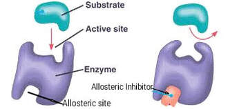
Factors Affecting Enzyme Activity :
- Temperature : higher temperature increase rate of collision between enzyme and substrate which results in increased rate of reaction.
- pH levels : each enzyme have an optimal pH level where it work the best in and an extreme pH difference can cause denaturing of enzyme.
- Substrate Concentration : rate of reaction increases until subtrate levels reach saturation (when enzyme reaches the maximum rate of reaction, when all enzymes are catalyzing)
Enzyme Inhibition :
- Competitive Inhibition : when inhibitors compete for active sites
- Noncompetitive Inhibition : when a inhibitor binds to another area, usually the allosteric site
- Allosteric Regulators : inhibitors that binds to the allosteric site
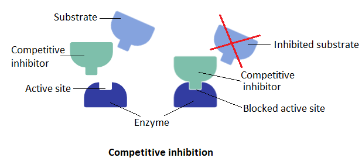
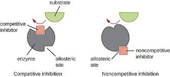
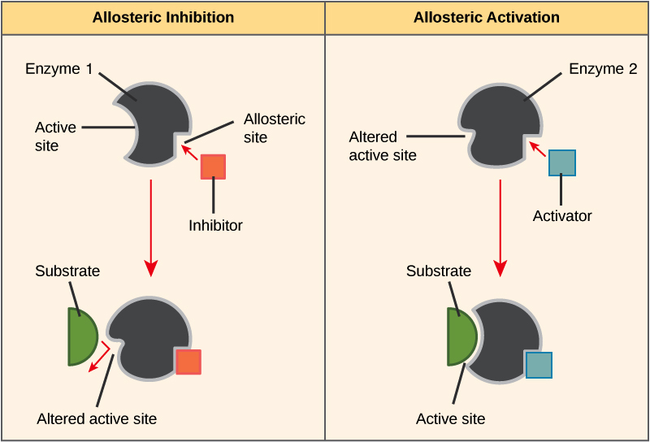
Energy in AP Biology:
-- ATP (3 Phosphates) : the primary energy that powers all cellular function, it crucial for functions like active transport, cellualr respiration, photosynthesis and muscle contractions. Consist of adenine + ribose + 3 phosphate which turns into ADP (2 Phosphates) once used and can be converted back into ATP through chemiosmosis
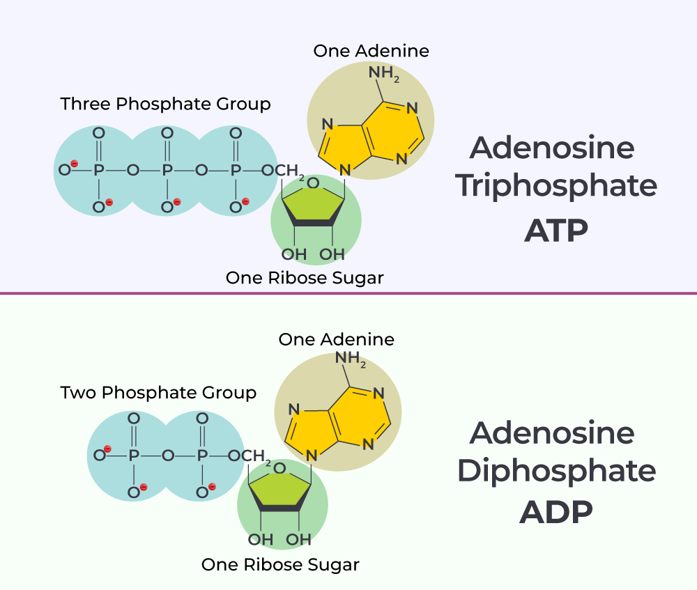
Photosynthesis: Split into 2 parts, the light dependent reaction (occurs in the thylakoid membrane) and the Calvin Cycle (light independent reaction) (occurs in the stroma).
Equation : 6CO2 + 6H2O + sunlight = C6H12O6 (glucose) + 6O2
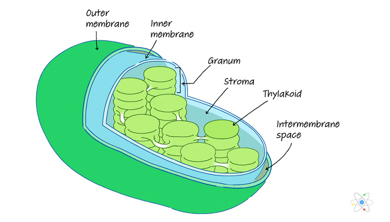
-- Light Dependent Reactions: requires sunlight and H2O, responsible for production of NADPH and ATP for Calvin Cycle and O2 as waste product
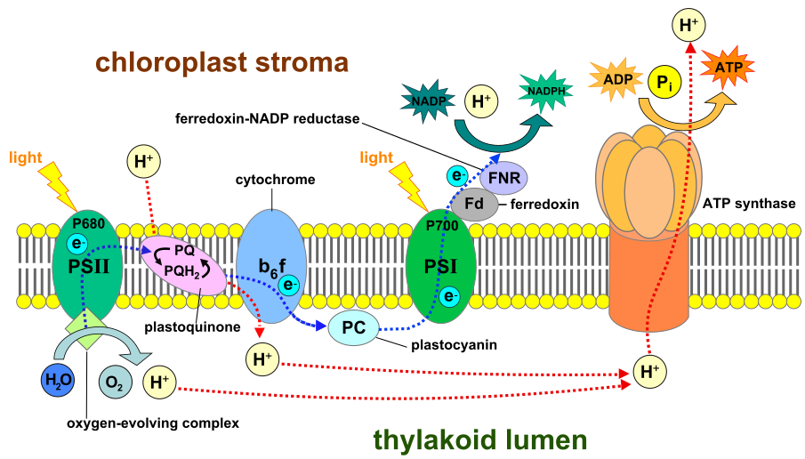
- Step 1 : water gets broken down into H+, O2 and E- through hydrolysis
- Step 2 : sunlight activates photosystem 2 which starts electron transport chain (ETC) by bringing electron from hydrolysis of water through proteins embedded in the membrane to photosystem 1
- Step 3 : When electron is being moved to photosystem 1, it activates proton pumps (active transport) embedded in the membrane which moves protons into the thylakoid, creating a proton gradient
- Step 4 : electron reaches photosystem 1 which is activated by sunlight and converts NADP, H+ and E- to NADPH (electron carrier) for calvin cycle
- Step 5 : protons move from thylakoid to the stroma through ATP synthase by concentration gradient (passive transport) allowing for ADP and Pi (1 phosphate) to combine and create ATP
-- Light Independent Reaction (Calvin Cycle): Uses ATP and NADPH from light dependent reaction and 6CO2 to create G3P (simple sugar)
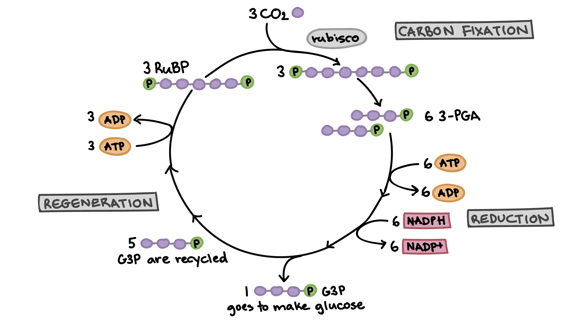
- Step 1 (Carbon Fixation) : 3CO2 (3C) binds with 3RuBisCO with 5C and 2Pi each (15C total) creating 3 6C and 2Pi compound which is broken into 6 3-PGA (3C and 1Pi, 18C total)
- Step 2 (Reduction) : each of the 3-PGA recieves Pi from ATP and 2 electrons from NADPH (18C total), one of the 3-PGA is used to create G3P (15C total) while the others are recycled for regeneration of RuBisCO
- Step 3 (Regeneration) : 3ATP is used with the remaining 3-PGA to regenerate RuBisCO for next carbon fixation
Types of Carbon Fixation :
C3 Plants : Most common way used by plants which creates 3-PGA during calvin cycle. These type of plants have trouble with Photorespiration which is when RuBisCO binds to O2 instead of CO2 which uses resources and creates CO2, wasting energy
C4 Plants : These type of plants separates the gas and calvin cycle between 2 compartments, mesophyll cells and bundle sheath cells. Uses PEP carboxylase in the mesophyll cells to only allow CO2 from moving to bundle sheath cells and the calvin cycle is located in the bundle sheath cells where only CO2 can enter which prevents photorespiration in dry, arid environments, creates inital 4C sugar
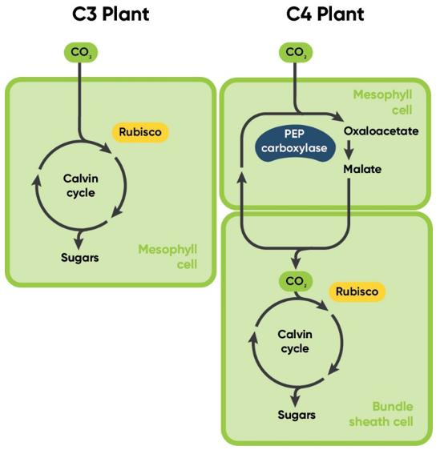
CAM Plants (Crassulacean Acid Metabolism): These plants separates the steps of calvin cycle by time, during the night, the stomata opens which reduces the amount of water lost and uses PEP carboxylase to prevent O2 from binding to RuBisCO. During the day, the calvin cycle occurs which allows for the plant to save water.
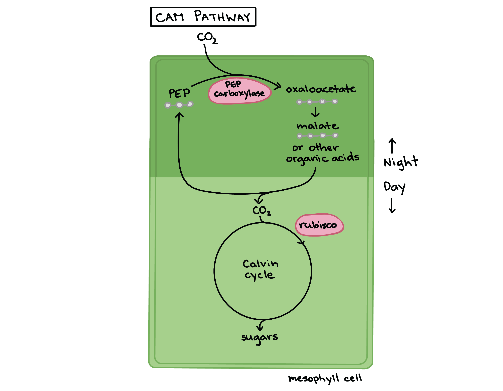
Cellular Respiration: Glycolysis occurs in the cytosol, Link Reaction occurs in the mitochondrial matrix, Krebs cycle occurs in the matrix, oxidative phosphorylation occurs in the inner membrane. Produces ~38 ATP when at best conditions.
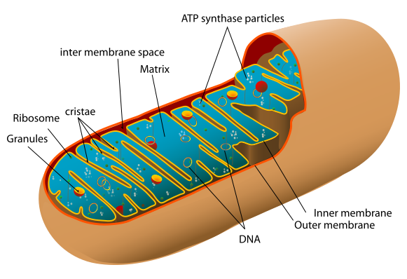
Equation : C6H12O6 (glucose) + 6O2 = 6CO2 + 6H2O + ATP
-- Aerobic Respiration (Uses O2)
- Step 1 (Glycolysis (Substrate Level Phosphorylation)) : Occurs in the cytosol, uses 1 glucose to create 2 pyruvate (Generates 2 ATP and 2 NADH (electron carrier))
- Step 2 (Link Reaction / Pyruvate Oxidation) : converts 1 pyruvate into 1 Acetyl-COA, produces 2 NADH per pyruvate and 1 CO2 per pyruvate
- Step 3 (Kerbs Cycle / Citric Acid Cycle (Substrate Level Phosphorylation)) : Uses 1 Acetyl-COA and produces a total of 2 ATP, 6 NADH, 2 FADH2 (electron carrier), and CO2
- Step 4 (Oxidative Phosphorylation) : NADH and FADH2 donates electrons to ETC (electron transport chain), electrons move through proteins and pumps protons into the intermembrane space which creates proton gradient, protons travel back through ATP synthase producing ATP and oxygen is the final electron acceptor of ETC which forms water when accepting electrons and keeps the process continuing.
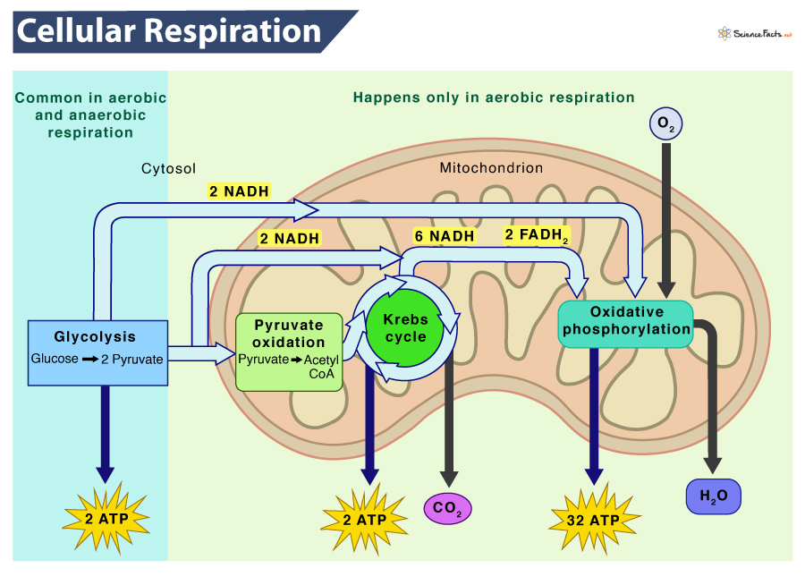
-- Fermentation (Anaerobic Respiration, No O2) : recycles NAD+ during glycolysis, generates 2 ATP total
| Type | Description |
| Lactic Acid Fermentation | In muscle cells, pyruvate gets converted into lactic acid when no oxygen is present which creates soreness and fatigue in the muscle |
| Alcoholic Fermentation | pyruvate is converted into ethanol and CO2 in yeast and some bacteria |